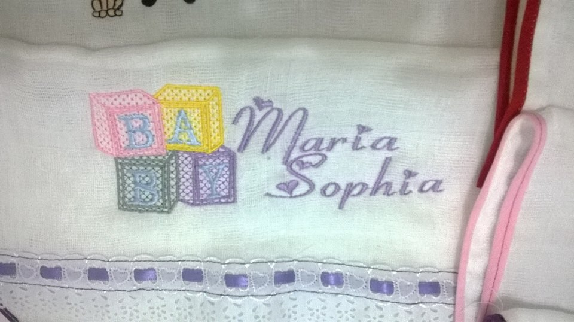
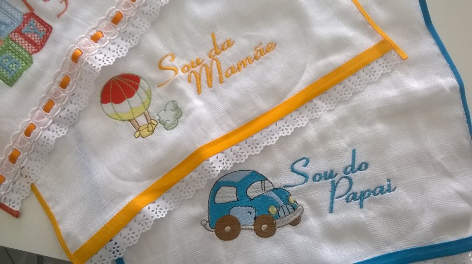
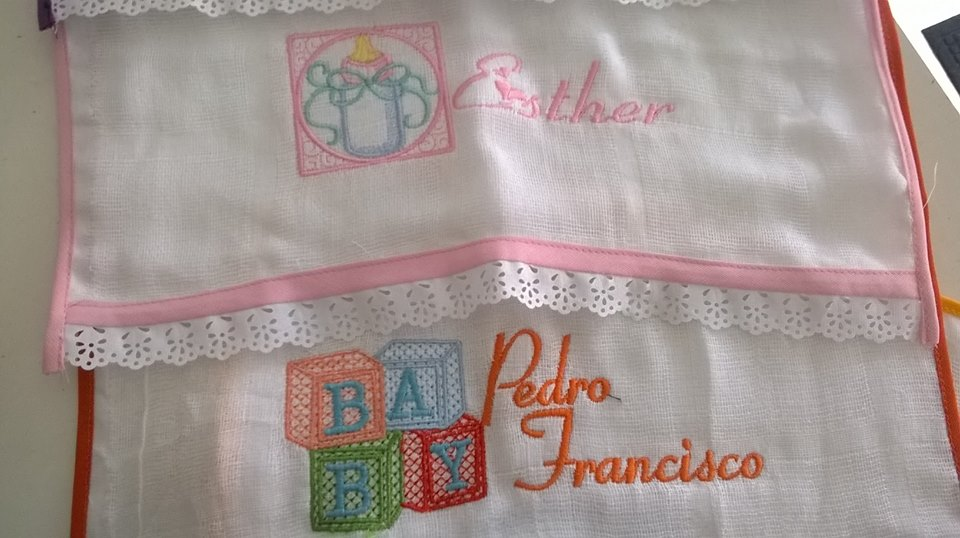
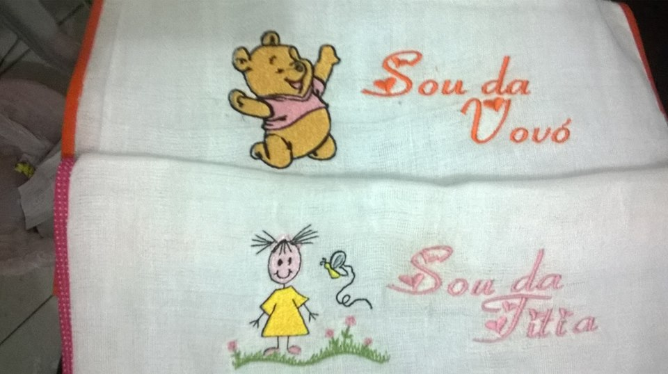
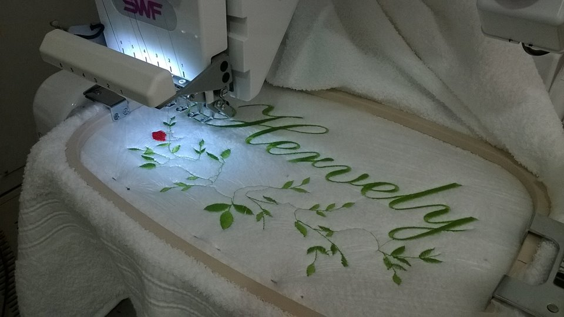

Tropical Bordados
Criações
Ensino superior
Animais
Infantil
Diversos
Disabled
Tropical Bordados
Bordados diversos para todos os gostos
Temos diversos bordados, encontre o que você está procurando!
teste
teste
teste
Estes são alguns dos nossos trabalhos:





Veja como nos encontrar!